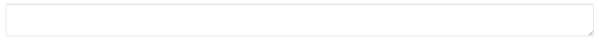
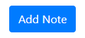
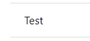

Hello, and welcome to this team based mangement application. This tool is here to help you as an application support engineer, remain structured, organised and in control of your work load. The Metastorm application can at times be difficult to keep track of, with thousands of Sponsor cases processed daily. Although you have ServiceNow to identify each individual ticket you progress, this application will allow you to record and document your progress on a front-end case by case basis.
text
The notes page acts as a bulletin board for reminders & messages about cases that you may need to store on a day-to-day basis. It features a table of notes you have added, an add button, and delete buttons for each individual note.
To add a note to your notes board, first enter your desired text into the text box displayed below.
Secondly click the 'Add Note' button displayed below, to add the text to the board.
Once you have a note on the board and you want to remove it, (example below).
Then click on the 'X' button displayed below to permantely remove the note from your board.